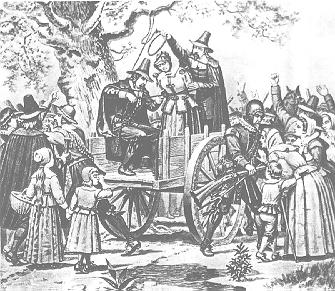

This is an archived copy of History Matters, provided by the Roy Rosenzweig Center for History and New Media. To explore this content in a new interface, visit Who Built America?.

The Salem Witchcraft Site
http://www.tulane.edu/~salem
Created and maintained by Richard B. Latner, Tulane University.
Reviewed March, 2013.
Richard B. Latner’s teaching and research Web site comes with a valuable set of downloadable data tables and several essays that explain the contexts for the site’s datasets. It is one of the most beautifully designed digital resources about the Salem witch-hunt currently available.
Thanks to the new comprehensive edition of court records, Records of the Salem Witch-Hunt (2009), edited by Bernard Rosenthal and a team of scholars, Latner has been able to extract a large amount of accurate quantitative and geographical information that advances understanding of the lengthy and complex Salem episode. Latner’s questions are simple: How many people were accused? When were they accused? Where did they live? How many were executed and when? Scholars have hardly agreed on the answers to such questions, mainly because they have not had accurate data or sufficient analytical tools. Latner provides both.

What are the results? Latner offers four basic datasets with instructions explaining how users can build their own data displays using these sets in Excel. The datasets are: (1) an alphabetical list of those accused; (2) a month-by-month table of accusations; (3) a geographical table of towns in which the accused lived; and (4) a month-by-month table of executions. Latner illustrates each of these datasets in the graphic displays as histograms and scatter plots, thus making the data much more understandable. The datasets can be downloaded into Excel and manipulated by the user. Users can change the numbers based on their own research and produce new data tables, bar graphs, and scatter diagrams.
Latner’s concern is with the chronology and geographical impact of the Salem witch trials. He concludes that the episode started in a small and unremarkable way, but after six weeks it took off, breaking out of the boundaries of Salem Village and far exceeding the numerical range and geographical scope of any previous New England witch-hunt. The data shows that the accusations progressed episodically through twenty-five towns in Essex County in two clearly defined chronological and geographical phases and concluded with a spate of executions at the end.
Latner emphasizes that the data stimulates new ways of thinking about this rather complicated event, but he also cautions that the patterns found by such analysis must be explained by other means. The data alone will not explain what went on in Samuel Parris’s household that triggered the accusations, nor will it explain the motives and thoughts of judges, ministers, juries, and accusers during the outbreak. Nevertheless, Latner argues that the quantitative data sets are a useful tool for uncovering aspects of the Salem event that might remain hidden by a sole reliance on traditional historical sources and methods. Both scholars and students will benefit from immersing themselves in Latner’s richly detailed and accurate resource. The Salem Witchcraft Site is an innovative electronic essay and a classroom teaching resource.
Benjamin C. Ray
University of Virginia
Charlottesville, Virginia